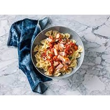

Ingrediënten:
Bereiding:
- Kook de pasta volgens de instructies op de verpakking.
- Bak de zalmfilets in een pan tot ze gaar zijn.
- Bereid de tomatensaus door tomaten te koken en te pureren, breng op smaak met kruiden naar keuze.
- Meng de tomatensaus met de gekookte pasta.
- Serveer de pasta met daarbovenop de gebakken zalm.
